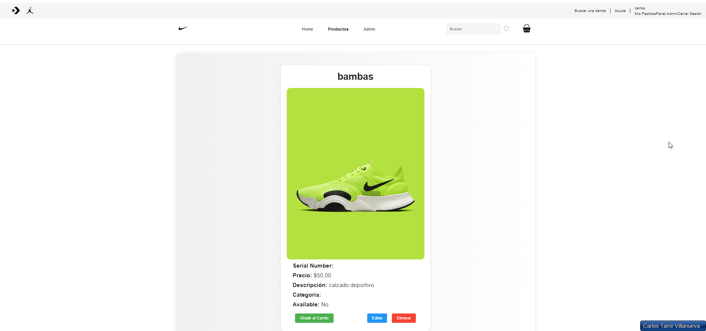
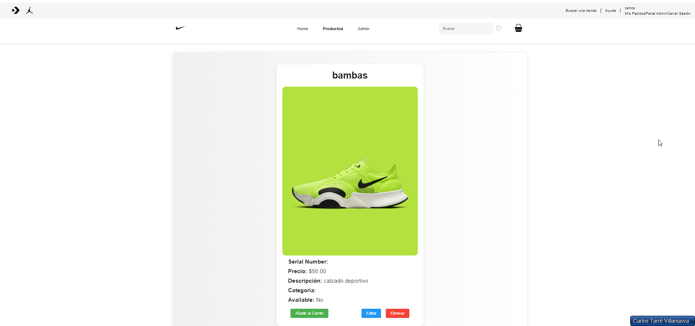
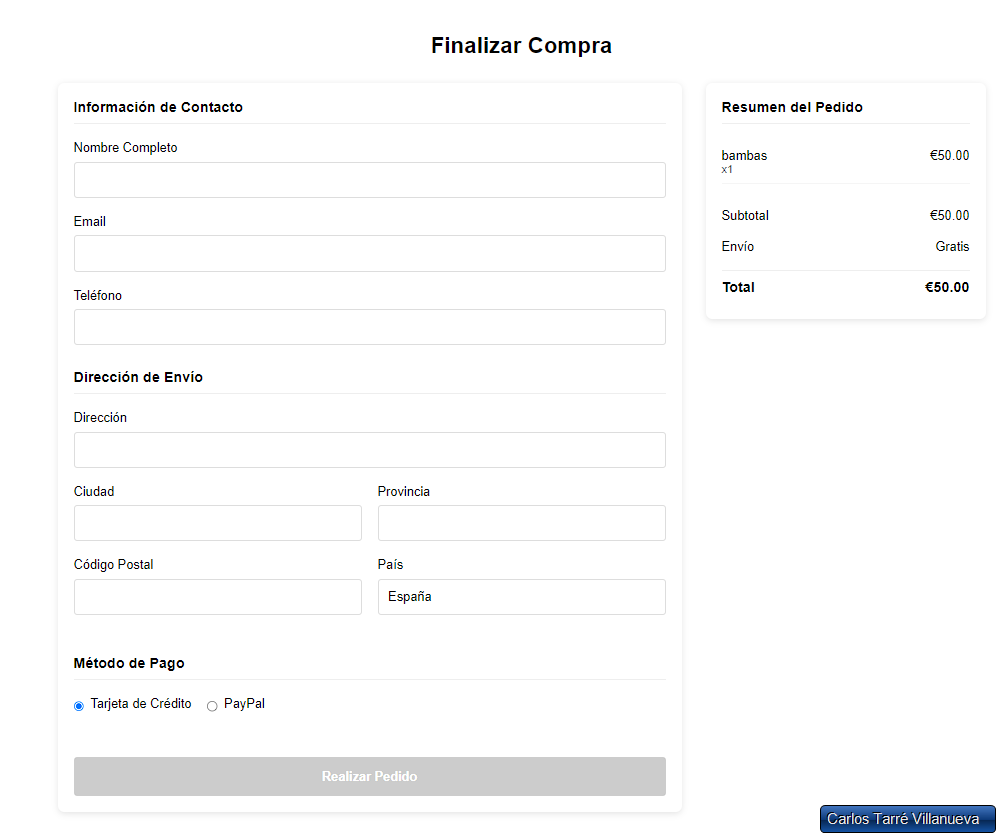
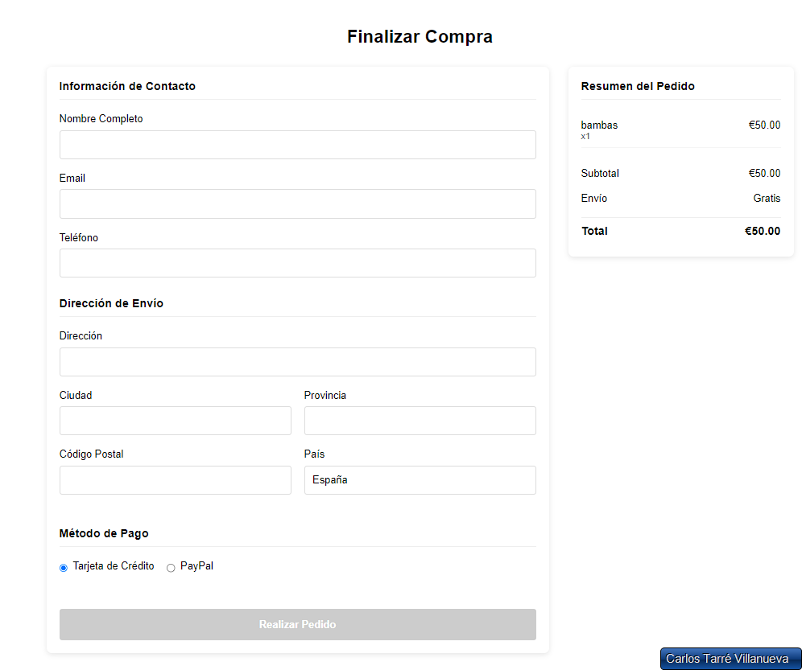

Proyectos
Página Web Nike
Sitio web inspirado en la marca Nike, desarrollado como práctica de frontend y backend completo. Incluye un diseño moderno, secciones interactivas y un sistema responsivo que se adapta a diferentes dispositivos. Además, cuenta con funcionalidades de usuario y administrador, carrito de compras y gestión de pedidos.
Roles y funcionalidades
- Usuario: navegar productos, añadir al carrito, proceder a la compra, ver historial de pedidos.
- Administrador: añadir, editar y eliminar productos, ver pedidos de todos los usuarios.
- Autenticación: registro, login y control de roles con JWT.
- Carrito: sincronización entre frontend y backend, actualización de cantidades, eliminación de productos.
- Pedidos: creación de órdenes, seguimiento del estado y vaciado del carrito tras la compra.
- Perfil: edición de información personal y gestión de pedidos.
Tecnologías utilizadas
- HTML5 → estructura semántica del sitio
- CSS3 → estilos modernos, responsive design y animaciones
- JavaScript (ES6+) → interactividad en el frontend
- Angular → desarrollo de componentes reutilizables y SPA
- Node.js & npm → entorno de ejecución y gestión de dependencias
- Express.js → configuración del backend y API REST
- MySQL → gestión de base de datos y almacenamiento de usuarios/productos/pedidos
- Git & GitHub → control de versiones y repositorio
- Cypress → pruebas end-to-end para verificar funcionalidades
Cómo ejecutar el proyecto
- Clonar el repositorio:
git clone https://github.com/Carlostarre/NikeCypress.git - Instalar dependencias:
- Frontend (Angular - carpeta
pixar-web):npm installynpm install -g @angular/clisi no tienes Angular CLI. - Backend (Node.js - carpeta
backend):npm install
- Frontend (Angular - carpeta
- Configurar base de datos MySQL:
- Abrir XAMPP y asegurarse de que MySQL esté iniciado.
- Crear la base de datos:
CREATE DATABASE nike_store; - Crear las tablas correspondientes ejecutando el script SQL incluido en el proyecto:
USE nike_store; -- Tabla de usuarios CREATE TABLE users ( id INT AUTO_INCREMENT PRIMARY KEY, name VARCHAR(100) NOT NULL, email VARCHAR(100) NOT NULL UNIQUE, password VARCHAR(255) NOT NULL, isAdmin BOOLEAN DEFAULT 0, createdAt TIMESTAMP DEFAULT CURRENT_TIMESTAMP ); -- Tabla de productos CREATE TABLE products ( id INT AUTO_INCREMENT PRIMARY KEY, name VARCHAR(255) NOT NULL, description TEXT, price DECIMAL(10,2) NOT NULL, stock INT DEFAULT 0, image VARCHAR(255), createdAt TIMESTAMP DEFAULT CURRENT_TIMESTAMP ); -- Tabla carrito CREATE TABLE cart ( id INT AUTO_INCREMENT PRIMARY KEY, userId INT NOT NULL, productId INT NOT NULL, quantity INT DEFAULT 1, FOREIGN KEY (userId) REFERENCES users(id) ON DELETE CASCADE, FOREIGN KEY (productId) REFERENCES products(id) ON DELETE CASCADE ); -- Tabla órdenes CREATE TABLE orders ( id INT AUTO_INCREMENT PRIMARY KEY, userId INT NOT NULL, status VARCHAR(50) DEFAULT 'Pending', createdAt TIMESTAMP DEFAULT CURRENT_TIMESTAMP, FOREIGN KEY (userId) REFERENCES users(id) ); -- Tabla items de órdenes CREATE TABLE order_items ( id INT AUTO_INCREMENT PRIMARY KEY, orderId INT NOT NULL, productId INT NOT NULL, quantity INT DEFAULT 1, FOREIGN KEY (orderId) REFERENCES orders(id) ON DELETE CASCADE, FOREIGN KEY (productId) REFERENCES products(id) ON DELETE CASCADE ); - Iniciar backend:
npm starten la carpetabackend. Servidor disponible enhttp://localhost:3000. - Iniciar frontend:
ng serveen la carpetapixar-web. Abrirhttp://localhost:4200en el navegador. - Configurar usuario administrador:
- Crear un usuario desde la web.
- Modificarlo a administrador en la base de datos MySQL:
UPDATE users SET isAdmin = 1 WHERE email = 'tu-email@example.com';
Capturas de pantalla

 

 

Proyectos
📄 Aplicación de Gestión de CV y Portfolio
Sistema web completo para la gestión de currículums vitae con autenticación segura y formularios dinámicos. Diseño moderno y responsive que se adapta a todos los dispositivos.
Funcionalidades principales
- Autenticación: registro e inicio de sesión con JWT y validación segura
- Gestión de CV: crear y editar información personal, experiencia, educación, habilidades y proyectos
- Persistencia: almacenamiento seguro en MySQL con sistema de usuarios
- Responsive: diseño adaptado para móviles, tablets y escritorio
Tecnologías utilizadas
- React → biblioteca para interfaces de usuario interactivas y componentes reutilizables
- JavaScript (ES6+) → lógica del frontend y manejo de estado
- Tailwind CSS → framework utility-first para diseño moderno y responsive
- PHP → backend con API REST para gestión de datos
- MySQL → base de datos relacional para usuarios
- JWT → autenticación y autorización segura con tokens
- XAMPP → entorno de desarrollo local (Apache + MySQL + PHP)
- Vite → herramienta de build rápida para React
- Git & GitHub → control de versiones y repositorio
Cómo ejecutar el proyecto
- Clonar el repositorio:
git clone https://github.com/tu-usuario/cv-portfolio.git - Configurar XAMPP:
- Iniciar Apache y MySQL desde el panel de control de XAMPP
- Crear base de datos MySQL:
- Crear base de datos:
CREATE DATABASE cv; - Ejecutar el script SQL incluido en el proyecto.
- Crear base de datos:
- Configurar backend:
- Copiar carpeta
apiaC:\xampp\htdocs\PracticaCV-main\api\ - Verificar credenciales de MySQL en
api.php(usuario: root, contraseña: vacía por defecto)
- Copiar carpeta
- Instalar dependencias del frontend:
npm installen la carpeta del proyecto - Iniciar servidor de desarrollo:
npm run dev. La aplicación estará disponible enhttp://localhost:5173 - Probar la aplicación:
- Registrar un nuevo usuario desde la interfaz web
- Iniciar sesión con las credenciales creadas
- Completar el formulario de CV con tu información
- Visualizar tu portfolio profesional
Características destacadas
- 🎨 Diseño moderno: paleta de colores navy/cyan profesional con Tailwind CSS
- 🔐 Seguridad: autenticación JWT, validación de formularios y protección de rutas
- 📱 Responsive: adaptado para todos los dispositivos
- ⚡ Performance: build optimizado con Vite para carga rápida
- 🧩 Modular: componentes React reutilizables y mantenibles
Capturas de pantalla
Mejoras propuestas
Estas son funcionalidades que se podrían añadir para hacer la aplicación más completa y atractiva:
- Foto de perfil: permitir que el usuario suba y visualice su imagen en el CV y en el portfolio.
- Campos adicionales: añadir teléfono, dirección, LinkedIn, GitHub, habilidades extra y cualquier otro campo personalizado que el usuario desee mostrar.
- Capturas de pantalla de proyectos: permitir subir imágenes de proyectos o secciones del CV para mostrar visualmente el trabajo realizado.
- Vista previa del CV: generar una sección de previsualización que muestre cómo se verá el CV final antes de guardar.
- Gestión de archivos: permitir cargar varios archivos multimedia o PDFs para enriquecer el portfolio.
- Optimización visual: mostrar las fotos y capturas de pantalla con un diseño responsive y con soporte para miniaturas y carruseles.
Habilidades
HTML, CSS, JavaScript
Desarrollo de interfaces web modernas, responsivas y accesibles.
PHP y MySQL
Desarrollo backend eficiente y gestión de bases de datos estructuradas.
Java
Programación orientada a objetos y aplicaciones escalables y robustas.
React & Frameworks
Implementación de interfaces dinámicas y reutilizables con buenas prácticas.
Git
Control de versiones eficiente y colaboración en proyectos de desarrollo.
Python
Desarrollo de scripts, automatización y aplicaciones backend robustas.